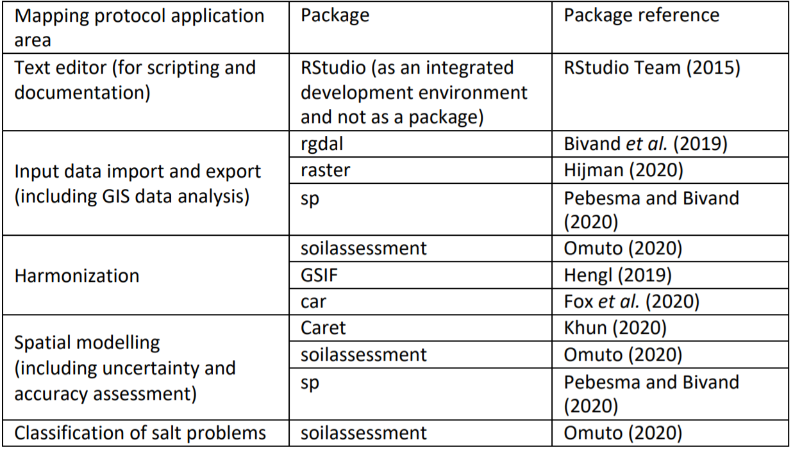
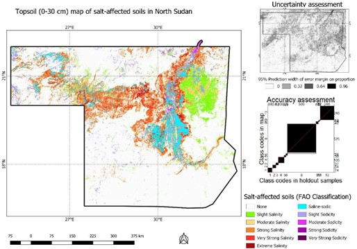

Chapter 5 Country-driven global mapping approach
5.1 Background
The country-driven approach for mapping salt-affected soils is based on indicator mapping backed by drivers of salt-affected soils and models for classification of the salt problems. The approach integrates and borrows from the potential of other mapping methods. It also offers quantification of mapping accuracy and uncertainty, which are increasingly accepted by the soil science community as a standard practice. It also facilitates building of spatial information on indicators and drivers besides information on the status of salt-affected soils at multiple scales. However, these advantages come at the price of data demand. Some of the required input data such as soil indicators (ESP and Soluble ions) may not be readily available in many territories. The country-driven global mapping is a three-step approach anchored on input data harmonization, spatial modelling of input soil indicators using spatial predictors, and classification of salt-affected soils (Figure 5.1).
Figure 5.1: Multiscale approach for national mapping salt-affected soils based on indicator maps
The approach puts emphasis on measured soil data (EC, pH, and ESP) as the primary soil indicators for classifying salt-affected soils. These input soil data are spatially modelled to produce maps of soil indicators of salt-affected soils. Appropriate classification schemes are selected to classify the indicator maps into maps of salt-affected soils (Figure 5.1). R software and its contributed packages are the principal software for implementing the country-driven global mapping protocol. A summary of the key packages for implementing various steps of the protocol is given in Table 5.1. RStudio software (https://rstudio.com/products/rstudio/download/) is used as an integrated development environment to support implementation of the packages in R.
Table 5.1: R packages and their application in multiscale mapping of salt-affected soils  These packages and their dependencies are installed using the following commands in R
install.packages(c("raster", "sp", "rgdal", "car", "carData", "dplyr", "spacetime", "gstat", "automap", "randomForest", "fitdistrplus", "e1071", "caret", "soilassessment", "soiltexture", "GSIF", "aqp", "plyr", "Hmisc", "corrplot", "factoextra", "spup", "purrr", "lattice", "ncf", "npsurv", "lsei", "qrnn", "nnet", "mda", "RColorBrewer", "vcd", "readxls","maptools","neuralnet","psych"))
library(sp); library(foreign); library(rgdal); library(car);library(carData); library(maptools) library(spacetime); library(gstat); library(automap);library(randomForest);library(fitdistrplus); library(e1071); library(caret); library(raster); library(soilassessment); library(soiltexture); library(GSIF); library(aqp); library(plyr); library(Hmisc); library(corrplot); library(factoextra) library(spup); library(purrr); library(lattice);library(ncf);library(npsurv); library(lsei); library(nnet); library(class); library(mda); library(RColorBrewer); library(vcd); library(grid); library(neuralnet);library(readxl); library(psych);library(qrnn); library(dplyr)It is important to note the following points when implementing the mapping protocol in Figure 5.1 in R.
- R is a case-sensitive scripting software. More than 90% of its commands are scripted in a text- editor and executed by running the line/script.
- Hash (#) denotes the beginning of a comment and is not executed by the software. Consequently, it can be used to insert comments in a line. All comments after hash (#) are colored green (like green traffic light) implying “pass” without execution.
- Errors and warnings are given in red, while functions and number are given in blue and commands and variables are given in black.
- When using RStudio text-editor, four panes are available in which the top left pane is the text editing window, top right pane is for data environment, bottom right pane is for display and help, and the bottom left is the console for executing the scripts.
- Implemented scripts and reports (warning or errors) are shown in the console pane.
- Some commands may run for some time and patience is recommended to enable the software to progress to completion. During such time, a red icon will be shown at the top left corner of the console pane.
5.2 Step 1: Input data harmonization
Input data harmonization at this point is carried out to: 1) harmonize soil indicators to those of saturated soil paste extract, 2) harmonize statistical distribution to normal distribution, and 3) harmonize soil depths at the interval of 0-30 cm, 30-100 cm, and 100-200 cm (and more depending on soil depths). These harmonization steps compliment those that were done during input data preparation.
5.2.1 Harmonizing GIS layers
Begin by setting the working directory. This is a recommendation building on the previous database development in which the input processed data were saved in the output folder (c:/salinity/output) in Section 4.3.4.
# Step 1-1: Import the data
setwd("C:/Salinity/Output") # Setting the working directory
soil=readOGR(".","soildata") # Importing soildata.shp as shapefileSpreadsheet data can also be imported directly as excel data or CSV using appropriate commands such as
for importing MS Excel or
for importing CSV filetype. GIS rater files are imported using either readGDAL or raster functions. Both functions accept many GIS raster file format such as geoTIF, ILWIS, ASCII, etc. When using the readGDAL function, the first instance is used to create a stack space for subsequent layers. Hence, it does not have “$” sign at the end of predictors and does not have “$band1” at the end of the import line. The function is unique since (1) it does not accept import and stack of layers of different dimensions in terms of spatial extent and pixel sizes and (2) it automatically creates a stack (here known as predictors) for input GIS layers. Subsequently, it is a preferred function for ensuring input data conformity. If the raster function is used, it may be necessary to resample the layers in case of possible differences in dimensions that may later introduce modelling errors. All imported input GIS layers should be named accordingly (dem, slope, ls, loncurve, cnbl, valley, rain, lcover, geology, pgeology, BBlue, BGreen, BRed, BIRed, swir1, swir2, etc.)
predictors=readGDAL("dem.tif")
predictors$slope=readGDAL("SLOPE.mpr")$band1
predictors$ls=readGDAL("ls.asc")$band1
predictors$valley=readGDAL("valley.mpr")$band1
predictors$geology=readGDAL("geology.mpr")$band1
predictors$BBlue=readGDAL("BBlue.mpr")$band1
predictors$swir1=readGDAL("swir1.asc")$band1
predictors$swir2=readGDAL("swir2.tif")$band1
predictors$dem=predictors$band1 # for replacing the first layer
predictors$band1=NULL # for removing replaced layer
# Step 1-2: Check the data for unique values and remove where possible
summary(predictors)
# Object of class SpatialGridDataFrame # Coordinates:
# min max # x -75674.99 417325
# y 1883692.11 2443692
# Is projected: TRUE # proj4string :
# [+proj=utm +zone=36 +datum=WGS84 +units=m +no_defs +ellps=WGS84 +towgs84=0,0,0] # Grid attributes:
# cellcentre.offset cellsize cells.dim # x -75176 997.9757 494
# y 1884191 998.2175 561
# Data attributes:
# dem loncurve ls cnbl
# Min. : 176.0 Min. :-1.000e-07 Min. :0.000002 Min. :178.6 # 1st Qu.: 292.5 1st Qu.:-1.000e-07 1st Qu.:0.011727 1st Qu.:279.4
# Median : 342.9 Median :-1.000e-07 Median :0.033486 Median :326.9 # Mean : 349.7 Mean : 1.170e-06 Mean :0.053562 Mean :332.3 # 3rd Qu.: 399.1 3rd Qu.: 1.149e-06 3rd Qu.:0.062155 3rd Qu.:380.0 # Max. :1064.6 Max. : 3.295e-04 Max. :7.043770 Max. :571.0
# .....
# swir1 swir2 BBlue BGreen
# Min. :0.008162 Min. :0.002062 Min. :0.009072 Min. :0.01625
# 1st Qu.:0.554471 1st Qu.:0.533823 1st Qu.:0.426480 1st Qu.:0.11551
# Median :0.625109 Median :0.603396 Median :0.476060 Median :0.13294
# Mean :0.604679 Mean :0.582251 Mean :0.462953 Mean :0.13189
# 3rd Qu.:0.676205 3rd Qu.:0.650973 3rd Qu.:0.516825 3rd Qu.:0.15002
# Max. :0.868268 Max. :0.838160 Max. :0.679898 Max. :0.22036
# Remove NAs in case they occur due to data clipping
predictors$slope=ifelse(is.na(predictors$slope),mean(!is.na(predictors$slope)),predi ctors$slope)Statistical distribution of the GIS layers may also need to be checked if it requires harmonization. The histogram function (hist) is used to facilitate visual assessment for skew and need for normalization. In the case-study sample dataset, slope and rainfall layers showed skewed distribution and are normalized with square root and log-transformation, respectively. Other transformation models can be tested for other datasets.
# Check for frequency distribution of the GIS layers
hist(predictors@data[,c("dem","slope","loncurve","cnbl","valley","lcover","rain", "geology","pgeology")])
# Step 1-3: Derive the remote sensing indicesRemote sensing image indices in Table 3.1 related to surface features/evidence of salt problems are determine using imageIndices function in the soilassessment package. It uses seven bands of the input remote sensing data, which should now be in the predictors stack of layers. They are specified in the script using the “$” symbol with the predictors.
predictors$SI1=imageIndices(predictors$BBlue,predictors$BGreen,predictors$BRed,predi ctors$BIRed,predictors$swir1,predictors$swir2,"SI1")
# Min. 1st Qu. Median Mean 3rd Qu. Max. # 0.03426 0.16152 0.18227 0.17972 0.20203 0.28645
predictors$SI2=imageIndices(predictors$BBlue,predictors$BGreen,predictors$BRed,predi ctors$BIRed,predictors$swir1,predictors$swir2,"SI2");summary(predictors$SI2)
# Min. 1st Qu. Median Mean 3rd Qu. Max. # 0.02974 0.31104 0.34469 0.33663 0.37158 0.50973
# Continue to complete all 13 image indices (see appendix A and Table 3.1)
predictors$BI=imageIndices(predictors$BBlue,predictors$BGreen,predictors$BRed,predic tors$BIRed,predictors$swir1,predictors$swir2,"BI");summary(predictors$BI)
# Min. 1st Qu. Median Mean 3rd Qu. Max. # 0.1113 0.5757 0.6454 0.6302 0.7039 0.9405Any NAs produced during the calculation of the image indices can also be removed using the command in Step 1-2. Altogether, there are at least 13 layers of image indices produced. This number can be reduced using multivariate principal component analysis (PCA). The next step assesses statistical distribution of the image indices and harmonizes them to normal distribution, which is a prerequisite for PCA data reduction.
# Step 1-4: assess statistical distribution and harmonize where necessary
hist(predictors@data[,24:29]) # Figure 5.2
summary(predictors$SI6)
# Min. 1st Qu. Median Mean 3rd Qu. Max. # 0.003647 0.940943 1.129692 1.068303 1.232106 1.663694
predictors$BI=sqrt(predictors$BI)
hist(predictors$BI)Figure 5.2: Empirical statistical distribution of image indices from Sudanese case-study dataset
VSSI and BI image indices showed slight skew. Test with square-root transformation was found to adequately normalize the data. Although the transformation model is arbitrarily tested at this stage, it is better to use robust models such as the Box-Cox transformation (Box and Cox, 1964).
# Step 1-5: Perform PCA and select the first PCs accounting for over 95% of the image indices' variation
# Extract the image layers
predicters=predictors@data[,c("SI1","SI2","SI3","SI4","SI5","SI6","SAVI","VSSI","NDS I","NDVI","SR","CRSI", "BI")]
soil.cor=cor(predicters)
corrplot(soil.cor,method="number",number.cex = 0.8) # Figure 5.3a
pca<-prcomp(predicters[], scale=TRUE)
fviz_eig(pca) # Figure 5.3bAfter normalizing the image indices, they are selected and converted into data-frame to enable determination of correlation and principal component analysis. Afterwards, the selected PCs are converted back to the raster stack. The correlation plot (Figure 5.3b) shows the correlation between image indices. For example, SI1 and SI2 have a Pearson correlation index equal to 86%. PCA examines these correlations and determines the principal axes where data are highly correlated. These axes are also known as principal component (or dimensions in Figure 5.3b). Figure 5.3 is important in guiding the choice of PCs to represent the entire (13) layers of image indices.
Figure 5.3: Correlation of image indices and scree plot of their principal component
In Figure 5.3b, cumulative sum of the first 4 PCs (Dimensions) add up to more than 95% explained variation in the overall 13 layers of the image indices. Hence, the first 4 PCs can adequately represent the 13 image indices. This approach can be used on any set of image indices to select the appropriate number of PCs to reduce the data bulk.
5.2.2 Harmonization of input soil data
Many methods can be used to determine EC. They include (1) use of saturated soil paste extract, (2) using other soil extracts, (3) using pedoTransfer models from other soil properties, or (4) electromagnetic induction. Harmonization seeks to standardize methods 2 to 4 to the equivalent values in method 1, since popular classification schemes use values obtained by method 1. (1) Example harmonization using known models in Table 3.5 (in Chapter3)
NB: This part is for the purposes of illustrating the steps for harmonizing EC. The case-study data indeed contains EC as obtained by the method of saturated soil paste extract and do not need harmonization. A quick look at the data structure is necessary to establish availability and format for target variables (EC, texture components, and organic carbon). The str function extracts the data structure.
# Step 1-6a: Harmonize input indicator measurements to those for saturated soil paste extract
#Step 1-6b: Load the library and import the soil data
str(soil)
# 'data.frame': 192 obs. of 14 variables:
# $ Sample : int 1 2 3 4 5 6 7 8 9 10 ...
# $ Pits : int 1 1 2 3 4 5 6 6 7 8 ...
# $ Longitude: num 62.2 62.2 62.2 62.2 62.2 ...
# $ Latitude : num 30.2 30.2 30.2 30.2 30.2 ...
# $ Upper : int 0 20 0 0 0 0 0 40 0 0 ...
# $ Lower : int 20 100 30 30 30 30 40 100 30 40 ...
# $ Horizon : Factor w/ 2 levels "A","B": 1 2 1 1 1 1 1 2 1 1 ...
# $ EC : num 1.16 1.63 0.499 0.295 0.161 0.8 1.85 0.938 0.167 0.141 ...
# $ PH : num 8.3 8.71 8.64 8.72 9.14 8.6 8.86 8.95 8.83 9.45 ...
# $ ESP : num 3.61 7.16 2.76 2.26 1.56 ...
# $ Sand : num 51 45.2 45.2 55.2 67.2 43.2 45.2 49.2 49.2 85.2 ...
# $ Silt : num 38 44 39 32 20 44 39 36 31 2 ...
# $ Clay : num 11 10.8 15.8 12.8 12.8 12.8 15.8 14.8 19.8 12.8 ...
# $ OC : num 0.21 0.32 0.24 0.66 0.23 0.36 0.17 0.05 1.37 0.12 ...The data seems to have the required variables for harmonizing EC values. The first step in the harmonization is to derive the soil textural classes. The functions for deriving the soil textural classes do not accept NAs in the data. Hence, they must be clearly checked and removed from the list of variables containing the textural components. This is done by first creating a dummy column to sum the texture components and using this dummy to choose only data-entries without missing entries (i.e. NA). In the case-study dataset, the texture components appear in variables number 11 (Sand), 12 (Silt) and 13 (Clay) (Note that there are 14 variables all together).
#Step 1-6c: Check for missing data and select only complete dataset
variable.names(soil[11]); variable.names(soil[12]); variable.names(soil[13]);
soil$dummy= rowSums(soil[, 11:13])
soil1=subset(soil,!is.na(soil$dummy))
soil1$dummy=NULL # remove the dummy
soil0=data.frame(soil1)
#Step 1-6c: Create and code the texture classes
SSCP=soil0[,c("Clay","Silt","Sand")]
names(SSCP) = c('CLAY', 'SILT', 'SAND')
SSCP = round(SSCP, 2)
SSCP_norm = TT.normalise.sum(tri.data = SSCP[,1:3], residuals = T)
colnames(SSCP_norm)[1:3] = paste0(colnames(SSCP_norm)[1:3],"_nm")
SSCP = cbind(SSCP, round(SSCP_norm, 2))
SSCP$CLAY=SSCP$CLAY_nm;SSCP$SILT=SSCP$SILT_nm;SSCP$SAND=SSCP$SAND_nm
rm(SSCP_norm)
soil0=cbind(soil0,"TEXCLASS" =TT.points.in.classes(tri.data =SSCP[, c('CLAY', 'SILT', 'SAND')],class.sys = "USDA.TT", PiC.type = "t",collapse = ', '))
soil0$TEXCLASS=as.factor(soil0$TEXCLASS)
soil0$TEXCLASS1=as.numeric(soil0$TEXCLASS)
summary(soil0$TEXCLASS)
rm(SSCP)
soil0$TEXCLASS=car::recode(soil0$TEXCLASS,"'Lo, SiLo'='SiLo'") # Here, the double classes are changed one at a time
summary(soil0$TEXCLASS)
#Cl Lo Lo, SiLo LoSa SaClLo SaLo SiLo
#2 51 2 9 1 104 22
soil0$TEXCLASS1=dplyr::recode(soil0$TEXCLASS,Cl=1, ClLo =7, Lo=11, LoSa=10, Sa=12, SaCl=8, SaClLo=9,SaLo=5, SiCl=2,SiClLo=3,SiLo=4,Si=6,CS=13,MS=14,HCL=16,FS=15)
summary(soil0$TEXCLASS1)
#Min. 1st Qu. Median Mean 3rd Qu. Max. 1.000 5.000 5.000 6.691 11.000 11.000
soil1=soil0It is important to note again that the sample case-study variables were determined on saturated soil paste extract. Hence, the examples for harmonization given here are for the purpose of demonstrating script implementation. Suppose the EC was determined from 1:1 soil extract, then the following script is used to harmonize the EC values.
#Step 1-6d: EC harmonization
soil1$ECse1=ECconversion1(soil1$EC,soil1$OC,soil1$Clay,soil1$texture1,"1:1","FAO")
summary(soil1$ECse1)
#Min. 1st Qu. Median Mean 3rd Qu. Max. NA's
#0.4912 2.0461 4.0769 10.5302 9.8501 108.8235 1- Example harmonization using pedo Transfer function
Pedo-transfer function (PTF) is a function for estimating soil property by utilizing functional relationship between this property (known as a target variable, such as ECSE) and other easy-to-measure soil variables such as texture, carbon, etc. Suppose a few samples have ECSE measurements, then a PTF is built between ECSE and the other soil properties. The PTF function is stored and later used to estimate ECSE for all (or future) samples in the study area. The soilassessment package has pedoTransfer function for building PTF. This function provides for alternative models such as linear, random forest, support vector machine, neural networks, etc. for modelling the relationship between the target soil variable and its predictors. The first term in the pedoTransfer function specifies the preferred model such as randomforest, svm, neuralnetwork, linear, etc. The second term specifies the dataframe containing the calibration dataset. This dataframe should not have NAs in any of the variables for developing the pedoTransfer model. The last terms are unlimited list of predictor variables, which are separated by comma. Their names should be like the variable names in the dataframe.
#Step 1-6e: EC harmonization
soil2 =soil1[sample(nrow(soil1)), ][1:(floor((nrow(soil1)/4)*1)), ]
soil2=subset(soil2,!is.na(soil2$ECse))
EC.ptf= pedoTrasnfer("randomforest",soil2,ECse,Sand,OC,Clay)
soil1$ECpf=predict(EC.ptf, newdata=soil1) #to attach the harmonized ECSE equivalent
plot(soil1$ECse,soil1$ ECpf)
abline(a=0,b=1,lty=20, col="black")- Example harmonization of apparent electrical conductivity of bulk soil
Apparent electrical conductivity of bulk soil (ECa) is measured in the field using proximal sensors such as EMI. It’s possible to obtain many sampled data points with this EC measurement approach owing to its rapid nature. However, the measured ECa values need calibration with measured ECSE to harmonize them. The harmonization is a two-step process in which the calibration model is first build between selected samples with ECa and ECSE and then the model applied to the remaining ECa to estimate the equivalent ECSE. In the soilassessment package, the function ECconversion3 facilitates this kind of harmonization. The following scripts demonstrate how to use ECconversion3 to harmonize ECa with ECSE. A scatterplot of ECa with ECSE is important in guiding the choice for the link model. In the given example, a power relationship is assumed as the link model between ECa and ECSE (Figure 5.4). Other link options such as linear, exponential, logarithmic, etc. are also provided in the ECconversion3 (Omuto, 2020).
#Step 1-6f: EC Harmonization
plot(ECse~ECa,soil2) # To choose a suitable predictive model #(Figure 5.4)
EC3.ml=nls(EC~ECconversion3(ECa,A,B,"power"), start=c(A=0.1, B=0.8), data=soil2)
soil$ECse3=ECconversion3(soil$EC, coef(EC3.ml)[1], coef(EC3.ml)[2],"power")Figure 5.4: Graphical illustration of relationship between apparent and measured EC
Soil depth harmonization aims at developing soil information for uniform depth throughout the soil data. Uniform depth facilitates comparison of salt problems down the profile and horizontally across the landscape. This harmonization is achieved with the depth-integrating spline approach (Bishop et al., 1999). The tool for implementing the approach is contained in the GSIF package (Hengl, 2019).
#Step 1-7: Harmonizing soil depths
lon=soil1$Longitude
lat=soil1$Latitude
id=soil1$Pits
top=soil1$Upper
bottom=soil1$Lower
horizon=soil1$Horizon
ECdp=soil1$EC
prof1=join(data.frame(id,top,bottom, ECdp, horizon),data.frame(id,lon,lat),type="inn er")
depths(prof1)=id~top+bottom Warning message:
converting IDs from factor to character
site(prof1)=~lon+lat
coordinates(prof1) = ~lon+lat
proj4string(prof1)=CRS("+proj=longlat +datum=WGS84 +no_defs")
depth.s = mpspline(prof1, var.name= "ECdp", lam=0.8,d = t(c(0,30,100,150)))
plot(prof1, color= "ECdp", name="horizon",color.palette = rev(brewer.pal(8, 'Accent'
)),par=c(cex.lab=2.0)) #Figure 5.5
lon=soil1$Longitude
lat=soil1$Latitude
id=soil1$Pits
top=soil1$Upper
bottom=soil1$Lower
horizon=soil1$Horizon
ECdp=soil1$EC
prof1=join(data.frame(id,top,bottom, ECdp, horizon),data.frame(id,lon,lat),type="inn er")
depths(prof1)=id~top+bottom Warning message:
converting IDs from factor to character
site(prof1)=~lon+lat
coordinates(prof1) = ~lon+lat
proj4string(prof1)=CRS("+proj=longlat +datum=WGS84 +no_defs")
depth.s = mpspline(prof1, var.name= "ECdp", lam=0.8,d = t(c(0,30,100,150)))
plot(prof1, color= "ECdp", name="horizon",color.palette = rev(brewer.pal(8, 'Accent'
)),par=c(cex.lab=2.0)) #Figure 5.5
lon=soil1$Longitude
lat=soil1$Latitude
id=soil1$Pits
top=soil1$Upper
bottom=soil1$Lower
horizon=soil1$Horizon
ECdp=soil1$EC
prof1=join(data.frame(id,top,bottom, ECdp, horizon),data.frame(id,lon,lat),type="inn er")
depths(prof1)=id~top+bottom Warning message:
converting IDs from factor to character
site(prof1)=~lon+lat
coordinates(prof1) = ~lon+lat
proj4string(prof1)=CRS("+proj=longlat +datum=WGS84 +no_defs")
depth.s = mpspline(prof1, var.name= "ECdp", lam=0.8,d = t(c(0,30,100,150)))
plot(prof1, color= "ECdp", name="horizon",color.palette = rev(brewer.pal(8, 'Accent'
)),par=c(cex.lab=2.0)) #Figure 5.5Figure 5.5: Example depth harmonization for ECse
#Step 1-8: Extract the depth-harmonized soil data and re-project
soilhrmdepths=data.frame(depth.s$idcol, depth.s$var.std, check.names = TRUE)
soil2=merge(soil1,soilhrmdepths,by=intersect(names(soil1),names(soilhrmdepths)),by.x
="Pits",by.y="depth.s.idcol",all=TRUE)
coordinates(soil2)=~Longitude+Latitude
proj4string(soil2)=CRS("+proj=longlat +datum=WGS84")#Attach CRS to the data
#Harmonize CRS and ensure use of the correct +proj and +zone for the study area
soil1=spTransform(soil2,CRS("+proj=utm +zone=36 +ellps=WGS84 +units=m +no_defs"))
soil1=soil2
hist(soil1$EC)
soil1=subset(soil1,!is.na(soil1$EC))
bubble(soil1,"X0.30.cm", main="Harmonized EC (0-30 cm)") #Figure 5.6Figure 5.6: Bubble plot for top 0-30cm harmonized EC
This harmonization is done to transform the frequency distribution to normal distribution. Frequency transformation to normal distribution is optional for spatial modelling algorithms. If it’s chosen, then the empirical distribution is first established through histogram analysis and transformation implemented if the distribution is found to be skewed. hist function is used to extract and plot the histogram. Box-Cox (1964) transformation is preferred. The following scripts illustrate the steps for transforming statistical distribution. Summary distribution is first obtained to establish if there are zeros, NAs, or negative values. It is desirable to remove them before implementing Box-Cox transformation.
#Step 1-9: Harmonization of statistical distribution
summary(soil1$X0.30.cm)
Min. 1st Qu. Median Mean 3rd Qu. Max. 0.0000 0.6291 1.8709 6.6812 5.3121 154.2463
soil1$dummy=(soil1$EC)+0.001 # add "+0.001" if minimum X0.30.cm is zero
hist(soil1$dummy, main="Frequency distribution (before transformation)", xlab="Harmo nized EC (dS/m)")
soil1$Tran=(soil1$dummy^(as.numeric(car::powerTransform(soil1$dummy, family ="bcPowe r")["lambda"]))-1)/(as.numeric(car::powerTransform(soil1$dummy, family ="bcPower")["la mbda"]))
hist(soil1$Tran, main="Frequency distribution (after transformation)",xlab="Harmoniz ed EC (dS/m)")Histogram plot of the empirical distributions before and after transformation are given in Figure 5.7.
Figure 5.7: Frequency distribution before and after EC transformation
5.3 Step 2: Spatial modelling of indicators
Spatial modelling of indicators of salt-affected soils is based on the digital soil mapping (DSM) concept. In this concept, a relationship is built between the soil indicators of salt problems and spatial predictors (GIS layers of drivers and indicators of salt problems and soil forming factors). This approach enables quantification of:
- Spatial information of indicators of salt-affected soils (EC, pH, ESP) and different soil depths;
- Mapping uncertainties and accuracy;
- Spatial information of classes and intensity of salt problems.
5.3.1 Choosing suitable model
DSM approach proposes a mathematical relationship between the target soil variable and its predictors (or representation of soil forming factors). This relationship is popularly known as the SCORPAN model (McBratney et al., 2003):
\[\begin{equation} \tag{5.1} Target\ soil\ variable = f(S,C,O,R,P,A,N) + error \end{equation}\]
where S isthe soil component (such as soil map), C is climate, O is organism, R isrelief, P is parent material, A is the Age(time), N is the spatial coordinates, error is the error term, and f is the link function of the relationship between the predictors and the target soil variable. Popular models often used to represent f are linear, random-forest, support-vector machine, mixed-effects, regression kriging, etc. The soilassessment package provides regmodelSuit function for guiding the choice of the appropriate model for mapping soil variables. It tests different models and returns the top nine models using RMSE, ME, NSE and r2. Lowest root mean-square error (RMSE), highest r2, lowest mean error (ME), highest Nash-Sutcliff coefficient of efficiency (NSE) are then used as the guiding criteria for choosing the suitable model (Holst and Thyregod, 1999; Gupta and Kling, 2011).
\[\begin{equation} \tag{5.2} RMSD = \sqrt{\sum_{i=1}^N \frac{(x_i -\bar{x_i})^2}N} \end{equation}\]
\[\begin{equation} \tag{5.3} ME = \frac{y_0 - y_m}n \end{equation}\]
\[\begin{equation} \tag{5.4} NSE = 1 - \frac{(y_0-y_m)^2}{(y_0 -\bar{y})^2} \end{equation}\]
where harmonized value is \(y_o\), \(y_m\) is the modelled value, and the mean value is \(\bar{y}\). An initial step for spatial modelling is to build the model in a calibration dataset and then testing the model using an independent dataset. This calls for the establishment of calibration and validation datasets. These datasets should have well aligned soil properties (indicators) and spatial predictors at each georeferenced sampling point. Pixel value extraction of GIS layers (predictors) using point data (soil1) is a suitable method for developing either the calibration or validation datasets.
#Step 2-1: Extract pixel values of predictors and attach to the soil sampling points
# First check for similarity in coordinate reference system - crs and then extract the predictors
crs(predictors); crs(soil1)
#+proj=utm +zone=36 +datum=WGS84 +units=m +no_defs +ellps=WGS84 +towgs84=0,0,0 CRS arguments:
#+proj=utm +zone=36 +datum=WGS84 +units=m +no_defs +ellps=WGS84 +towgs84=0,0,0It’s important to ensure that the CRS for predictors and soil database are the same before starting pixel extraction
#Then extract the pixel values for all predictors into the soildata dataframe
{predictors.ov=over(soil1, predictors)
soil1$dem=predictors.ov$dem
soil1$slope=predictors.ov$slope
soil1$cnbl=predictors.ov$cnbl
soil1$ls=predictors.ov$ls
soil1$valley=predictors.ov$valley
soil1$loncurve=predictors.ov$loncurve
soil1$lcover=predictors.ov$lcover
soil1$rain=predictors.ov$rain
soil1$pgeology=predictors.ov$pgeology
soil1$geology=predictors.ov$geology
soil1$PCA1=predictors.ov$PCA1
soil1$PCA2=predictors.ov$PCA2
soil1$PCA3=predictors.ov$PCA3
soil1$PCA4=predictors.ov$PCA4
}
#Step 2-2: Establish suitable DSM model
summary(soil1)
# Object of class SpatialPointsDataFrame Coordinates:
# min max Longitude -261790.8 497928
# Latitude 1841020.7 2430061
# Is projected: TRUE proj4string :
# [+proj=utm +zone=36 +datum=WGS84 +units=m +no_defs +ellps=WGS84
# +towgs84=0,0,0]
# Number of points: 1498 Data attributes:
# Pits Sample Upper Lower Horizon
# 292 : 8 1 : 1 Min. : 0.00 Min. : 2.00 Min. :1.000
# 280 : 7 10 : 1 1st Qu.: 0.00 1st Qu.: 30.00 1st Qu.:1.000
# 293 : 7 100 : 1 Median : 30.00 Median : 64.00 Median :2.500
# 327 : 7 1000 : 1 Mean : 42.56 Mean : 75.37 Mean :2.692
# 372 : 7 1001 : 1 3rd Qu.: 70.00 3rd Qu.:110.00 3rd Qu.:4.000
# 378 : 7 1002 : 1 Max. :210.00 Max. :300.00 Max. :8.000
# ....
# ls valley loncurve lcover
# Min. :0.00051 Min. : 0.7306 Min. :0e+00 Min. : 2.0
# 1st Qu.:0.00129 1st Qu.: 30.1037 1st Qu.:0e+00 1st Qu.:178.0
# Median :0.00219 Median : 43.0999 Median :0e+00 Median :178.0
# Mean :0.02028 Mean : 44.6613 Mean :0e+00 Mean :155.5
# 3rd Qu.:0.02821 3rd Qu.: 62.2221 3rd Qu.:0e+00 3rd Qu.:178.0
# Max. :0.44952 Max. :105.7522 Max. :1e-05 Max. :188.0
# NA's 4 NA's 4 NA's 4 NA's 4The NAs appearing in the data need to be removed (or investigated).
soil1=subset(soil1,!is.na(soil1$dem))
soil11a=soil1@data[,c("Tran","dem","slope","ls","cnbl","loncurve","valley","rain","l
cover","pgeology","geology","PCA1","PCA2","PCA3","PCA4")]
regmodelSuit(soil11a,Tran,dem,geology,pgeology,slope,rain,loncurve,cnbl,valley,lcove r,ls,PCA1,PCA2,PCA3, PCA4)
# |========================================================================| 100%
# ME RMSE R2 NSE
# Linear 1.37034834 1.8129133 0.1320264 -4.45424486
# RandomForest 0.24614749 0.4291176 0.9623631 0.99707891
# SVM 1.34745209 1.8212570 0.1357457 -4.44014767
# BayesianGLM 1.36669809 1.8051662 0.1399516 -4.55079779
# BaggedCART 0.88676091 1.1705841 0.7018074 0.44302759
# Cubist 0.07851255 0.2744213 0.9753726 1.00000000
# CART 1.40147986 1.8274332 0.1320797 -4.56273851
# Ranger 0.26852953 0.4205875 0.9655103 0.99702690
# QuantRandForest 0.04923343 0.2855093 0.9761419 1.00000000
# QuantNeuralNT 1.16162791 1.7075411 0.2582558 0.07778314The above results depict quantum regression random forest and cubist models as suitable for modelling the 0-30cm ECse using the given spatial predictors in the case-study test data.
5.3.2 Model building and testing
Statistical model building and testing strategies recommend independent datasets for model building and for model testing. These datasets should ideally be sampled with focus for model building and testing. In the absence of independently sampled dataset for either model building (calibration) or testing (validation), data-splitting strategy is often used. Data-splitting strategy randomly (or stratified randomly) splits the data into two parts. One part is held as calibration and the other as validation. The validation dataset is used for accuracy assessment. The indices for reporting modelling accuracy include RMSE, ME, r2, NSE, and a graphical plot of the modelled versus harmonized values. Data-splitting may be arbitrarily chosen according to or depending on the data-size.
#Step 2-3: Model building and testing
{soil4=as.data.frame(soil1)
bound <- floor((nrow(soil4)/4)*3)
soil3 <- soil4[sample(nrow(soil4)), ]
df.traina <- soil3[1:bound, ]
df.testa <- soil3[(bound+1):nrow(soil3), ]}
rf.ec=train(Tran~(slope+rain+loncurve+ls+cnbl+valley+lcover+dem+PCA1+PCA2+PCA3+PCA4+ PCA5), data = df.traina, method = "qrf", trControl=trainControl( method = "cv",numbe r=5,returnResamp = "all",savePredictions = TRUE, search = "random",verboseIter = FALSE
))
# Show the prediction interval
df.testa$Strain=predict(rf.ec,newdata=df.testa)
hist(df.testa$Strain,xlab="Box-Cox Transformed ECse (0-30cm)", main=NULL)
abline(v = quantile(df.testa$Strain, probs = c(0.05, 0.95)),lty = 5, col = "red")Figure 5.8: Graphical plot of frequency distribution with prediction limits at 95% confidence interval
Prediction limits on the Box-Cox transformed values at 95% confidence interval are given in Figure 5.8. It shows the interval around the mean of 0.77 as [-2, 4.1].
#Step 2-4: Accuracy assessment
cor(df.testa$Strain,df.testa$dummy)^2 [1] 0.9950319
{plot(df.testa$Strain~df.testa$dummy, xlab="Measured ECse",ylab="Modelled ECse", mai n="Accuracy assessment on hold-out samples")
+ abline(a=0,b=1,lty=20, col="blue")} # Figure 5.9Figure 5.9: Graphical plot of predicted versus measured EC
Bias=mean(df.testa$Strain-df.testa$dummy,na.rm=TRUE)
RMSE=sqrt(sum(df.testa$Strain-df.testa$dummy,na.rm=TRUE)^2/length((df.testa$Strain-d f.testa$dummy)))
Rsquared=cor(df.testa$Strain,df.testa$dummy)^2
NSE=1-sum(df.testa$Strain-df.testa$dummy,na.rm=TRUE)^2/sum((df.testa$Strain-mean(df. testa$dummy,na.rm=TRUE))^2,na.rm=TRUE)
statia=data.frame(Bias,RMSE,Rsquared,NSE);View(statia)
write.csv(statia,file = "EC0_30_validmodel_stats.csv")5.3.3 Spatial prediction and uncertainty assessment
The model can now be used to produce spatial prediction of the target variable (EC in this case) in the whole study area. A summary of the predicted and validation data can also be compared to give indication of the prediction ranges.
#Step 2-3: Use the developed model to predict the map of EC
lmbda1=(as.numeric(powerTransform(soil1$dummy, family ="bcPower")["lambda"]))
predictors$ECte=predicta(rf.ec,predictors)
coordinates(df.testa)=~Longitude+Latitude
proj4string(df.testa)=CRS("+proj=utm +zone=36 +datum=WGS84 +units=m +no_defs +ellps= WGS84 +towgs84=0,0,0") # Make sure to use correct CRS
predicters.ov1=over(df.testa, predictors)
df.testa$Predre=predicters.ov1$ECse
cor(df.testa$dummy,df.testa$Predre)^2 [1] 0.9978655
#Compare the spatial prediction and validation dataset
featureRep(predictors["ECse"],df.testa) #Figure 5.10
summary(predictors$ECse);summary(df.testa$dummy)
# Min. 1st Qu. Median Mean 3rd Qu. Max.
# 0.00007 0.48810 1.17487 1.51685 1.61781 112.74435
# Min. 1st Qu. Median Mean 3rd Qu. Max.
# 0.00048 0.59755 1.71126 6.60388 5.05220 113.50941Figure 5:10: Representativeness of validation (sample points) EC ranges in prediction map (feature map)
The feature representation in Figure 5.10 shows how well the range of measured EC (validation EC) are contained in the prediction map. In the case-study sample, high EC (>40 dS/m) seem to have been poorly captured in the prediction map. The x-axis shows the frequency (probability density) of occurrence of data (EC) values in y-axis. Poor representation of the high (EC > 40) implies model uncertainty for high EC values. This will be further investigated when uncertainties are produced.
Uncertainty assessment
The general spatial model for digital soil mapping is generally given as
\[\begin{equation} \tag{5.5} y = f(X) + \varepsilon \end{equation}\]
where \(y\) is the target soil variable to be mapped, \(X\) is a vector of spatial predictors (controlling factors of causes or drives for salt problems), \(\varepsilon\) is the error term, and \(f\) is the link function between the target soil variable and its drivers/forming factors. The nature of \(f\) is unknown and is approximated by mathematical models. These model approximations, denoted as \(\bar{f}\), give estimates of \(y\) which are also denoted as \(\bar{y}\). The difference between \(y\) and \(\bar{y}\) is the uncertain quantity.
\[\begin{equation} \tag{5.6} \bar{y} = \bar{f}(X) \end{equation}\]
\[\begin{equation} \tag{5.7} y - \bar{y} = [f(X) + \varepsilon] - \bar{f}(X)\\ = [f(x) -\]+ \varepsilon \end{equation}\]
In this Book, the uncertain quantity is estimated using prediction width at 95% confidence interval. predUncertain function in soilassessment package is used to extract the uncertainty by bootstrap approach (Efron, 1992). The inputs for the function are a list of predictors, input soil indicator, and the chosen link model (which is taken from the suitable model for map development in Section 5.3.1).
#Step 2-6: Uncertainty assessment
soil6a=soil1[,c("Tran")]
predictors6a=predictors[c("dem","slope","cnbl","lcover","loncurve","rain","pgeology"
,"geology","ls","valley","PCA1","PCA2","PCA3","PCA4","PCA5")]
pred_uncerta=predUncertain(soil6a,predictors6a,3,95,"qrandomforest")
spplot(pred_uncerta, "pred_width", scales = list(draw = TRUE),col.regions=heat.color s(20,rev = TRUE)) + spplot(df.testa,"dummy",pch=3,cex=0.4) #Figure 6.11
#Step 2-7: Exporting the uncertainty maps
EC0_30_uncertain=(pred_uncerta$pred_width*lmbda1+1)^(1/lmbda1)
writeRaster(EC0_30_uncertain, filename="EC0_30_uncertain.tif",format="GTiff")Figure 5.11: Spatial prediction width at 95% confidence interval and overlay of validation points
The steps for spatial modelling of EC should be repeated for pH, ESP and soluble ions for 30-100 cm soil depths. Altogether, the final products form the spatial information of indicators of salt-affected soils at 0- 30 cm and 30-100 cm soil depths.
5.4 Part 3: Spatial modelling of salt-affected soils
5.4.1 Spatial modelling of salt-affected soils
This section describes the approach for spatial modelling of salt-affected soils based on input maps of soil indicators of salt problems. It is the final step of the multiscale approach in Figure 5.1. Spatial modelling approach for salt-affected soils is focused on:
- Classification of salt-affected areas;
- Identification of intensity of the salt problems;
- Assessment of uncertainty in developing maps of salt-affected soils. The mathematical model for classifying salt-affected soils is given here as
\[\begin{equation} \tag{5.8} salt = g(EC,pH,ESP) + error \end{equation}\]
where salt is the class of type or intensity of the salt problems and error is the difference between the actual and modelled values classes. Proposed estimations for the model \(g\) in the literature are given in Table 2.4 and Table 2.5. The soilassessment package contains the functions saltClass, saltSeverity and saltRating for implementing these models. The input data for saltClass and saltSeverity functions are the three soil indicators, EC, pH, and ESP. saltRating functions give the major classes of salt-affected soils using EC and pH only. It’s an approximation for indicative classes which need improvement with data from sodium salts. The input data for classifying salt-affected soils can be point-data in a spreadsheet dataframe or raster maps.
#Step 3-1: Classifying types of salt-affected soils
predictors$salty=saltClass(predictors$ECse,predictors$PH,predictors$ESP,"FAO")
summary(predictors$salty)
#Min. 1st Qu. Median Mean 3rd Qu. Max.
#1.000 1.000 1.000 1.151 1.000 5.000
predictors$saltiness=classCode(predictors$salty,"saltclass")
spplot(predictors["salty"])
spplot(predictors["saltiness"]) # Figure 5.12a
predictors$Salt_affected=saltSeverity(predictors$ECse,predictors$PH,predictors$ESP," FAO") predictors$saltaffectedness=classCode(predictors$Salt_affected,"saltseverity")
spplot(predictors["saltaffectedness"]) # Figure 5.12bFigure 5.12: Maps of salt-affected soils (0-30 cm)
The final maps in Figure 5.12 are exported as a GIS file format for use with other GIS software (such as QGIS) or for data sharing. Since the export function does not work with factors /character values, the salt classes in the maps are first converted into numeric map-values and then exported. A look-up table (LUT) is necessary to help identify the classes and the unique numeric codes generated for each map-value. The LUT is exported as a text-file.
#Step 3-2: Exporting the maps
predictors$Saltclass=as.numeric(predictors$saltaffectedness)
salinity_LUT30=classLUT(predictors["saltaffectedness"],"saltseverity")
writeGDAL(predictors["Saltclass"], drivername = "GTiff", "Top0_30saltaffected.tif")
write.table(salinity_LUT30,file = "saltaffected_LUT30.txt",row.names = FALSE)5.4.2 Accuracy assessment
Accuracy of classified salt-affected map is assessed using confusion matrix. In this strategy holdout samples are independently classified in terms of types and severity of salt problems in the soil. Classification of the holdout samples should follow the same procedure of harmonization as other input data (that is, harmonization of input indicators and depths 0-30 and 30-100 cm). These classes are then compared to the pixel-extracted classes from the classified maps. The Kappa index is a suitable indicator for reporting the accuracy.
#Step 3-2: Import and classify validation dataset
soilv=readOGR(".","validation_harmonized")
soilv=subset(soilv,soilv$Horizon==1)
soilv$salt_affected1=saltSeverity(soilv$EC,soilv$pH,soilv$ESP,"FAO")
summary(soilv$salt_affected1)
# Min. 1st Qu. Median Mean 3rd Qu. Max. 3.0 6.0 8.0 8.5 #11.5 15.0
soilv$saltaffectedness1=classCode(soilv$salt_affected1,"saltseverity")
summary(soilv$saltaffectedness1)After classifying the validation dataset, the dataset is used to extract pixel values of the classified map and compared with the classified validation.
#Step 3-3: Extract the salt classes from the map using the validation samples
soilv=subset(soilv,!is.na(soilv$saltaffectedness1))
predictors.ovv=over(soilv, predictors)
soilv$salt_affected=predictors.ovv$Salt_affected
soilv$saltaffectedness=predictors.ovv$saltaffectedness
# Check the summary of extracted classified pixels
summary(soilv$salt_affected)
summary(soilv$saltaffectedness)A visual comparison shows that the validation datasets had points classified as extremely saline soil, but the map reported only one pixel. Similarly, three points in the validation datasets had strong salinity class while the map had 10 pixels with strong salinity classes. A graphical plot of the comparison (confusion matrix) gives a clear picture of the accuracy (Figure 5.13).
# Plot the confusion matrix and determine the Kappa index
agreementplot(confusion(soilv$salt_affected, soilv$salt_affected1),main = "Accuracy assessment",xlab = "Class codes in holdout samples", ylab = "Class codes in map")
Kappa(confusion(soilv$salt_affected, soilv$salt_affected1)) Figure 5.13: Graphical illustration of classification accuracy for salt-affected soils
5.4.3 Uncertainty assessment
Uncertainty assessment in salt-affected modelling is conceived as estimating uncertainties contributed by input data modelling and uncertainties from the salt-classification model. The Monte Carlo uncertainty propagation approach is used to model both input data uncertainty and classification model uncertainty (Sawicka et al., 2018). This is a three-step approach involving input parameter specification, development of marginal and joint distributions, and simulations for uncertainty propagation (Figure 5.14). Input parameter specifications comprise definition of the salt-classification model (Equation 5.8) and spatial distribution of mean and variance of the input variables. Spatial distribution of mean and variance are used to train the MC simulations at a set number of simulations/realizations. Usually, MC simulations are more accurate with a higher number of realizations. However, this may cost the analysis computing time for large datasets. A trade-off is necessary to safeguard suitable accuracy while at the same time incurring moderate computing time. A value of 100 is suggested for modelling salt-affected soils.
Figure 5.14: Monte Carlo uncertainty estimation process
Development of marginal density functions uses statistical distribution parameters and correlation models (crm). Examples of statistical distribution parameters, which depend on the type of distribution, are the mean(??????????) and standard variation (????????) for normal distribution or the scale (???) and rate (??) for gamma distribution. The following steps describes the process for preparing the input indicator maps into raster file format, since the modules for uncertainty assessment were developed for the raster file format. The input maps are further converted into spatialPixelsDataFrame to facilitate mathematical operations on dataframes. It is important to check the probability distributions of the input data using the histogram function. Although MC simulations in Figure 5.14 are not strict on the type of the distribution, normal distribution is easy to sample. It’s therefore recommended that normalized distributions be established from the input maps.
#Step 3-4: Convert the input layers into raster files
EC=raster(predictors["ECse"]);names(EC)=c("EC"); EC1=as(EC,"SpatialPixelsDataFrame")
PH=raster(predictors["PH"]); names(PH)=c("PH"); PH1=as(PH,"SpatialPixelsDataFrame")
ESP=raster(predictors["ESP"]);names(EC)=c("ESP");ESP1=as(ESP,"SpatialPixelsDataFrame ")
ECte=raster(predictors["ECte"]);ECsd=pred_uncerta$pred_sd; names(ECsd)=c("ECsd")
PHde=raster(predictors["PHt"]);PHsd=pred_uncertb$pred_sd; names(PHsd)=c("PHsd")
ESPt=raster(predictors["ESPt"]);ESPsd=pred_uncertc$pred_sd; names(ESPsd)=c("ESPsd")
# Obtain sample spatial autocorrelation (Figure 5.15)
b=nrow(EC1)
c=trunc(0.01*b)
jj=EC1[sample(b,c),]
vrm=autofitVariogram(EC~1,jj)
plot(vrm)#Note the spatial correlation model and the value of Range parameter
acf((EC1$EC)) ##Also not the acf0 (at lag 0)
EC_crm <- makeCRM(acf0 = 0.85, range = 20000, model = "Sph")
plot(EC_crm, main = "EC correlogram")The above correlation functions are repeated for all input soil indicators for 0-30 cm and 30-100 cm.
Figure 5.15: Correlation functions for EC (0-30 cm)
#Step 3-5: Develop input marginal and joint multivariate uncertainty models for defining MC models
EC_UM=defineUM(distribution="norm",distr_param = c(ECte,ECsd),crm =EC_crm,id = "EC")
PH_UM=defineUM(distribution ="norm",distr_param =c(PHde,PHsd),crm =PH_crm,id = "PH")
ESP_UM=defineUM(distribution="norm",distr_param=c(ESPt,ESPsd),crm=ESP_crm,id= "ESP")
class(EC_UM);class(PH_UM);class(ESP_UM)
# [1] "MarginalNumericSpatial"
# [1] "MarginalNumericSpatial"
# [1] "MarginalNumericSpatial"
#Get the correlation values and use them in defining the Monte Carlo Uncertainty Mode (MUM)
cor(values(ECte),values(PHde)); cor(values(ECte),values(ESPt)); cor(values(PHde),val ues(ESPt))
# [1] 0.5511048
# [1] 0.3204495
# [1] 0.2859129
salinityMUM = defineMUM(UMlist = list(EC_UM, PH_UM, ESP_UM), cormatrix = matrix(c(1, cor(values(ECte),values(PHde)), cor(values(ECte),values(ESPt)), cor(values(ECte), values(PHde)), 1, cor(values(PHde), values(ESPt)), cor(values(ECte), values(ESPt)), cor(values(PHde), values(ESPt)),1), nrow = 3, ncol = 3))
class(salinityMUM)
#[1] "JointNumericSpatial"Possible realizations are now developed after setting the Monte Carlo Uncertainty models (MUM). 100 level is set for simulating the MC simulations.
#Step 3-6: Create MC realizations from the distributions
MC <- 100
input_sample = genSample(UMobject = salinityMUM, n = MC, samplemethod = "ugs", nmax
= 20, asList = FALSE)
Linear Model of Coregionalization found. Good. [using unconditional Gaussian cosimulation]
# Compute input sample statistics
EC_sample = input_sample[[1:MC]]
PH_sample = input_sample[[(MC+1):(2*MC)]]
ESP_sample = input_sample[[(2*MC+1):(3*MC)]]
EC_sample_mean <- mean(EC_sample)
PH_sample_mean <- mean(PH_sample)
ESP_sample_mean <- mean(ESP_sample)
EC_sample_sd <- calc(EC_sample, fun = sd)
PH_sample_sd <- calc(PH_sample, fun = sd)
ESP_sample_sd <- calc(ESP_sample, fun = sd)
#Plot the realizations
par(mfrow=c(2,2),mar = c(1, 1, 2, 2), mgp = c(1.7, 0.5, 0), oma = c(0, 0, 0, 1),
las = 1, cex.main = 1, tcl = -0.2, cex.axis = 0.8, cex.lab = 0.8)
plot(EC_sample_mean, main = "Mean of ECt realizations", xaxt = "n", yaxt = "n")
plot(PH_sample_mean, main = "Mean of PHt realizations", xaxt = "n", yaxt = "n")
plot(ESP_sample_mean, main = "Mean of ESPt realizations", xaxt = "n", yaxt = "n")Note that the MC simulations were done on the normalized input soil indicators. It’s possible to sample from non-normalized data. However, a harmonized statistical distribution is use in this book. The uncertainty propagation model is used to determine how uncertainties in input soil indicators propagate through the classification model into the final classified map.
#Step 3-7: Uncertainty propagation through the classification model
Salinity_model_raster <- function (EC1,PH1,ESP1){
+ ww=EC1
+ ww=raster(ww)
+ ww$salt=saltSeverity(values(EC1),values(PH1),values(ESP1),"FAO")
+ ww=ww$salt; names(ww)=c("salt")
+ ww
+ }
v <- list()
v[[1]] = map(1:100, function(x){input_sample[[x]]})
v[[2]] = map(101:200, function(x){input_sample[[x]]})
v[[3]] = map(201:300, function(x){input_sample[[x]]})
input_sample=v
salinity_sample=propagate(realizations=input_sample,model=Salinity_model_raster,n=MC
)
#Determine the uncertainty in final classified map
samplelist <- list()
samplelist [[1]] = map(1:100, function(x){input_sample[[x]]})
samplelist [[2]] = map(101:200, function(x){input_sample[[x]]})
samplelist [[3]] = map(201:300, function(x){input_sample[[x]]})
input_sample= samplelist
salinity_sample = propagate(realizations = input_sample, model = Salinity_model_raster, n = MC)
salinity_sample <- raster::stack(salinity_sample)
names(salinity_sample) <- paste("salt.", c(1:nlayers(salinity_sample)), sep = "")
salinity_freq = modal(salinity_sample, freq=TRUE)
salinity_prop = salinity_fre/100
salinity_SErr = sqrt(salinity_prop*(1-salinity_prop)/100)
CL=0.95
z_star=round(qnorm((1-CL)/2,lower.tail=F),digits = 2)
salinity_MErr=z_star*salinity_SErr
writeRaster(salinity_MErr,filename="Salinity_ME.tif",format="GTiff")The final output is exported to a GIS file format for map layout development (Figure 5.17).
Overall classification accuracy of salt-affected topsoils (0-30 cm) was 65%. These soils covered more than 82% of the topsoils in the case-study area (Figure 5.17). Northwest of the area had slight to moderately saline topsoil with pockets of overlying saline-sodic and slightly sodic topsoils. Topsoil salinity seems to be predominant in the eastern side towards the Red Sea. Topsoil sodicity seems to be concentrated along the River Nile (Figure 5.17). The above steps for developing maps of salt-affected soils and associated uncertainty maps should be repeated for 30-100 cm soil depths.

## Map update
### Update needs assessment
Salt problem in the soil is a dynamic phenomenon owing to the changing characteristics of its drivers. It is therefore expected that maps of salt-affected soils will also change with time. Furthermore, the spatial coverage of measured soil indicators is not always exhaustive owing to sampling limitations. Altogether, these factors emphasize the need for planning for updates. The following factors need consideration when planning update for salt-affected soil maps:
- Need to update the age of input data used in developing the current map;
- Need for additional data collection to cover areas with high uncertainties in the current map;
- Need for field surveys to monitor hot-spot areas in terms of salt problems;
- Budget to cover the update cost;
- Update focus (e.g. for prevention or control of salt problems, database management, etc.).
5.4.4 Sampling for monitoring and gap filling
One of the points to consider when planning information update is the number of locations to visit and the geographic areas to prioritize. The number of locations is determined using a simple expression such as
\[\begin{equation} \tag{5.9} samples = Area \times (\frac{1}{4\times w \times pixel})^2 \end{equation}\]
where pixel is the pixel size of the map, Area is the area of target site to be sampled in m2, and \(w\) is the number of soil forming factors data for mapping, which is obtained from the Jenny’s soil forming factors model (Cl,O,R,P). The maximum possible number of soil-forming factors (w) is 5 (Jenny’s factors and Soil) irrespective of number of layers in each factor while the minimum number is 1. Equation (5.9) is based on the minimum legible distance (MLD) concept in soil mapping (USDA-NRCS, 1999). The number of samples from Equation (5.9) can be allocated to the target area using available sampling protocols such as Latin hypercube sampling, random sampling, stratified random sampling (Sheikholeslami and Razavi, 2017). The function surveyPoints in the soilassessment package, which uses stratified random sampling is used to implement the sample allocation. The inputs for this function are:
- the map to sample;
- number of CLORP layers used in developing the map;
- the class in the map to sample, and the proportion of all statistically possible sample-size to target.
#Step 4-1: Identifying areas to target with update # Get the summary of classes to target
predictors$saltaffectedness=classCode(predictors$Salt_affected,"saltseverity")
hist(predictors$Salt_affected, main = "Topsoil salt-affected classes ", xlab="Codes for salt-affected classes")
#Convert the summary into a dataframe for determining the proportions of each class
salts=predictors["saltaffectedness"]; salts=as(salts,"SpatialPixelsDataFrame")
salts=predictors["saltaffectedness"]; salts=as(salts,"SpatialPixelsDataFrame")
salty=as.data.frame(salts)
salty1=data.frame(count(salty$saltaffectedness))
colnames(salty1)=c("Saltclass","Cases")
salty1$Props=round(salty1$Cases/sum(salty1$Cases)*100,1)
barchart(Saltclass~Props, data=salty1, xlab="Proportion (%)")The bar plot shows the proportions of study areas dominated by the salt intensity classes. After choosing the preferred class to update, then sample points are selected and distributed in the identified class.
#Step 4-2: Create number of update locations and display in the map
predictors$Saltclass=as.numeric(predictors$saltaffectedness)
salinity_LUT30=classLUT(predictors["saltaffectedness"],"saltseverity")
salt_affected_class=5
clorp_factors=5
survey=surveyPoints(soilsample,clorp_factors,salt_affected_class,10)
length(survey$new)
[1] 33
spplot(soilsample, scales=list(draw=TRUE),sp.layout=list("sp.points",survey,pch=8,co l="cyan")) # Figure 5.18
writeOGR(survey,".","SurveyPointsClass5",driver = "ESRI Shapefile")Figure 5.18: Number and placement of samples for updating